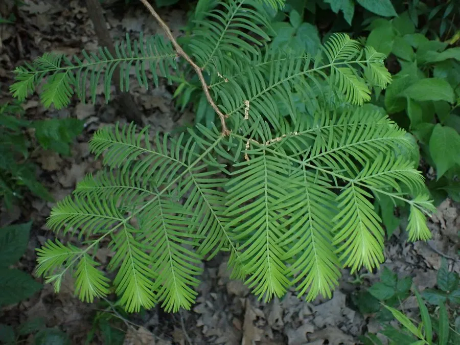

乔木 · 植物界
水杉 Metasequoia glyptostroboides

中国特有的孑遗裸子植物，树干笔直，秋季叶色转红，20 世纪 40 年代才被重新发现活体，被称为“活化石”。
- 分类
- 门裸子植物门纲松柏纲目松柏目科柏科属水杉属
- 栖息环境
- 海拔 800–1500 米的河谷、溪边与山坡下部，喜温暖湿润气候
- 地理分布
- 中国湖北利川、重庆石柱、湖南龙山交界的狭窄山区；各国广泛引种栽培
- 保护级别
- IUCN 濒危（EN）；中国国家一级保护野生植物
物种志
水杉为落叶乔木，高可达 35 m，主干通直，树皮红褐色并呈条片状剥落；小枝对生，叶片条形、扁平而柔软，在侧枝上排成羽状两列，入秋转为红褐色，随后连同小枝一同脱落。雌雄同株，球花单性，球果近球形，成熟时深褐色，种子扁平并具翅，可随风传播。
水杉曾被认为早已灭绝，1941 年植物学家在湖北利川谋道溪发现活体植株，轰动世界植物学界。野生种群仅分布于湖北利川、重庆石柱与湖南龙山交界的狭窄山区，喜温暖湿润气候与排水良好的酸性土壤。水杉生长迅速，20 年即可成材，耐水湿，常用于河岸护堤与湿地绿化，现已引种到世界各地。水杉的重新发现被视为 20 世纪植物学最重要的成就之一，如今长江流域的湿地与公园中随处可见成片的水杉林。
形态与习性
- 株高可达 35 m，胸径可达 1 m
- 花期2–3 月，先花后叶
- 球果成熟10–11 月，成熟后开裂散种
- 光照喜光，幼苗期稍耐侧方庇荫
- 水分喜湿润，耐水湿，可生于河岸与浅水边
- 土壤深厚肥沃、排水良好的酸性沙壤土
- 主要用途防护林、湿地绿化、用材与园林景观
趣味知识
- 水杉的化石曾遍布北半球，一度被认为已灭绝，1941 年在中国湖北重新发现活体。
- 水杉是落叶针叶树，秋季叶片连同小枝一起脱落，与多数常绿针叶树不同。
- 水杉生长极快，20 年生树高可达 20 m 以上，是优良的速生用材树种。